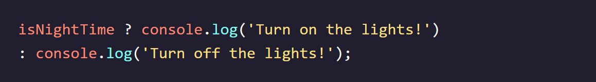

Codecademy - Learn JavaScript
Notes taken while going through the Codecademy Learn JS course
Introduction to JavaScript
What is JavaScrpit
- JavaScript is a programming language that is primarily used in web development.
- It is known as the language of most modern web browsers.
- JavaScript has evolved and improved over time, becoming a powerful, flexible, and fast language.
- It is used for web development and beyond, being employed in increasingly complex projects.
- JavaScript is often the first language learned by self-taught coders due to its importance in web development.
- It powers the dynamic behavior of websites.
- Learning JavaScript provides a foundation for understanding more complex concepts in programming.
- The introductory concepts covered in this lesson include data types and built-in objects.
Console
- The console is a panel that displays important messages, such as errors, for developers.
- In JavaScript, the console keyword refers to an object that allows us to log messages and data.
- The console object has a built-in method called .log() for printing or logging to the console.
- We can use console.log() to print values and messages to the console.
- Example: console.log(5) logs the value 5 to the console.
- It is recommended to end each statement with a semicolon, although it is not always required.
- console.log() can be used to print different types of data.
Comments
- Comments in JavaScript are used to provide explanations, instructions, or annotations in the code.
- Single line comments start with two forward slashes // and comment out a single line.
- Single line comments can also be used after a line of code.
- Multi-line comments start with /* and end with */ and can comment out multiple lines.
- Comments can also be used to ignore a section of code in the middle of a line.
Data Types
- Data types classify the different kinds of data used in programming.
- JavaScript has seven fundamental data types: Number, String, Boolean, Null, Undefined, Symbol, and Object.
- Primitive data types include Number, String, Boolean, Null, Undefined, and Symbol.
- Objects are more complex and allow for collections of related data.
- Strings are used to represent text and are enclosed in single quotes ('...') or double quotes ("...").
- Numbers can be whole numbers or numbers with decimals.
- Boolean represents true or false values.
- Null represents the intentional absence of a value.
- Undefined represents the absence of a value, indicating that the value does not exist.
- Symbols are unique identifiers used in more complex coding.
- Objects are collections of related data.
- Printing a string is done using console.log('...');.
- Printing a number is done without quotes, such as console.log(40);.

Arithmetic Operators
- Arithmetic operators perform mathematical calculations on numbers in JavaScript.
- The addition operator (+) adds two numbers together.
- The subtraction operator (-) subtracts the second number from the first.
- The multiplication operator (*) multiplies two numbers.
- The division operator (/) divides the first number by the second.
- The remainder operator (%) returns the remainder of the division between two numbers.
- The expression inside console.log() is evaluated, and the result is printed to the console.
- To print the characters as a string, wrap them in quotes.
String Concatenation
- The + operator can be used to concatenate strings in JavaScript.
- When the + operator is used between two strings, it appends the right string to the left string.
- This process of combining strings is called string concatenation.
- Example: console.log('hi' + 'ya'); prints 'hiya'.
- Example: console.log('I love to ' + 'code.'); prints 'I love to code.'.
- When concatenating strings, make sure to include any necessary spaces or punctuation.
- Example: console.log('front ' + 'space'); prints 'front space'.
- Example: console.log('middle' + ' ' + 'space'); prints 'middle space'.
- Multiple concatenations can be chained together to create a final result.
Properties
- JavaScript saves data as instances of different data types.
- Each data type has specific properties associated with it.
- Properties are accessed using the dot (.) operator.
- Example: console.log('Hello'.length) retrieves the length property of the string instance.
- The value of a property is retrieved from the instance and can be used in the program.
Methods
- Methods in JavaScript are actions that can be performed on data types.
- Data types have specific methods associated with them.
- Methods are called using the dot (.) operator, followed by the method name and parentheses.
- Example: 'example string'.methodName().
- .toUpperCase(): Converts a string to all uppercase letters.
- console.log('hello'.toUpperCase()) prints 'HELLO'.
- .startsWith(): Checks if a string starts with a specified character or string.

Built-In Objects
- JavaScript has built-in objects that provide useful functionality.
- One example is the Math object, which allows complex mathematical operations.
- Objects have methods that can be called using the dot (.) operator.
- Example: objectName.methodName().
- The Math object has methods like .random() for generating random numbers.
- Example: console.log(Math.random()) prints a random number between 0 and 1.
- To generate a random number between 0 and a specific range, multiply the result by the range value.
- Example: Math.random() * 50 generates a random number between 0 and 50.
- Math.floor() rounds down a decimal number to the nearest whole number.
Review: Introduction
- Data is printed, or logged, to the console, a panel that displays messages, with console.log().
- We can write single-line comments with // and multi-line comments between /* and */.
- There are 7 fundamental data types in JavaScript: strings, numbers, booleans, null, undefined, symbol, and object.
- Numbers are any number without quotes: 23.8879
- Strings are characters wrapped in single or double quotes: 'Sample String'
- The built-in arithmetic operators include +, -, *, /, and %.
- Objects, including instances of data types, can have properties, stored information. The properties are denoted with a . after the name of the object, for example: 'Hello'.length.
- Objects, including instances of data types, can have methods which perform actions. Methods are called by appending the object or instance with a period, the method name, and parentheses. For example: 'hello'.toUpperCase().
- We can access properties and methods by using the ., dot operator.
- Built-in objects, including Math, are collections of methods and properties that JavaScript provides.
Variables
Introduction to Variables
- A variable is a container for a value in programming.
- Variables store information in a computer's memory.
- They provide a way to label data with a descriptive name for clarity.
- Variables can be created with a descriptive name.
- Information can be stored or updated in a variable.
- Variables allow us to reference or retrieve stored information.
- Variables are not values themselves; they contain and represent values with a name.
- They are represented by colored boxes in diagrams, with the content representing the value and the label representing the name.
- The lesson covers the usage of the var, let, and const keywords to create variables.
Var Variables
- Prior to ES6, the var keyword was used to create variables in JavaScript.
- Example: var myName = 'Arya';
- var is short for "variable" and declares a new variable.
- Variable names are written in camel case, starting with a lowercase letter.
- The assignment operator = assigns a value to the variable.
- Variables cannot start with numbers.
- Variable names are case-sensitive.
- Avoid using variable names that are the same as JavaScript keywords.
Let Variables
- The let keyword was introduced in ES6 and allows variables to be reassigned.
- Variables declared with let can be reassigned to different values.
- let variables can be declared without assigning an initial value.
- In such cases, the variable is automatically initialized with the value undefined.
- The value of a price variable can be assigned later.
Const Variables
- The const keyword was introduced in ES6 and is used to declare constant variables.
- const variables cannot be reassigned once they are assigned a value.
- Attempting to reassign a const variable will result in a TypeError.
- const variables must be assigned a value when declared.
- Attempting to declare a const variable without a value will result in a SyntaxError.
- Choose between let and const based on whether you'll need to reassign the variable later.
- Use let if you need to reassign the variable, and use const for variables that remain constant.
Mathematical Assignment
- Mathematical assignment operators combine mathematical operations with variable assignment.
- The += operator adds a value to the variable and assigns the result back to the variable.
- Other mathematical assignment operators include -= (subtract and assign), *= (multiply and assign), and /= (divide and assign).

Increment & Decrement Operators
- The increment operator (++) increases the value of a variable by 1.
- The decrement operator (--) decreases the value of a variable by 1.
- The updated value of the variable is assigned as the new value of that variable.
String Concatenation with Variables
- The + operator can be used to concatenate strings in JavaScript.
- The value of the variable myPet is concatenated with other strings.
- The + operator combines multiple strings into one.
- The resulting concatenated string can be logged or used in other operations.
String Interpolation
- In ES6, we can use template literals to interpolate variables into strings.
- Template literals are enclosed by backticks ( ).
- Inside the template literal, we use ${} as a placeholder for the variable.
- The value of the variable myPet is inserted into the template literal.
- Template literals improve code readability and eliminate the need for escaping quotes.
typeof Operator
- The typeof operator is used to check the data type of a value.
- The typeof operator returns a string representing the data type of the value.
- It can be used to check the data type of variables or expressions.
- Common data types returned by typeof are 'string', 'number', 'boolean', 'object', 'function', and 'undefined'.
Review: Variables
- Variables hold reusable data in a program and associate it with a name.
- Variables are stored in memory.
- The var keyword is used in pre-ES6 versions of JS.
- let is the preferred way to declare a variable when it can be reassigned, and const is the preferred way to declare a variable with a constant value.
- Variables that have not been initialized store the primitive data type undefined.
- Mathematical assignment operators make it easy to calculate a new value and assign it to the same variable.
- The + operator is used to concatenate strings including string values held in variables.
- In ES6, template literals use backticks ` and ${} to interpolate values into a string.
- The typeof keyword returns the data type (as a string) of a value.
Conditional Statements
Introduction to Conditional Statements
- Conditional statements are used to make decisions in code based on specific conditions.
- They mimic everyday decision-making processes where actions are taken based on circumstances.
- Conditional statements consist of if, else if, and else statements.
- Comparison operators are used to evaluate conditions and determine if they are true or false.
- Logical operators allow combining multiple conditions and creating complex conditionals.
- Values in JavaScript can be categorized as truthy or falsy based on their boolean evaluation.
- Ternary operators provide a concise way to write conditional expressions.
- The switch statement is another type of conditional statement used for multiple case scenarios.
if Statements
- An if statement allows us to perform a task based on a condition.
- Syntax: if (condition) { // code block }
- The condition is placed inside parentheses ().
- If the condition evaluates to true, the code inside the block is executed.
- If the condition evaluates to false, the block is skipped.
- The code block is indicated by curly braces {}.

if...else Statements
- An if...else statement allows us to execute different blocks of code based on a condition.
- if (condition) { // code block to execute if the condition is true } else { // code block to execute if the condition is false }
- The condition is placed inside parentheses ().
- If the condition evaluates to true, the code block inside the if statement is executed.
- If the condition evaluates to false, the code block inside the else statement is executed.
- The code blocks are indicated by curly braces {}.
- An if...else statement is used to make binary decisions.
Comparison Operators
- Comparison operators are used in conditional statements to compare values.
- Common comparison operators include:
- Less than (<)
- Greater than (>)
- Less than or equal to (<=)
- Greater than or equal to (>=)
- Is equal to (===)
- Is not equal to (!==)
- Comparison operators compare the value on the left with the value on the right
- The result of a comparison is either true or false
- Comparison statements are like questions, where a "yes" answer evaluates to true and a "no" answer evaluates to false.
- Comparison statements consist of two values being compared and an operator separating them.
Logical Operators
- Logical operators are used to work with boolean values in conditionals.
- There are three logical operators:
- The and operator (&&) checks if two conditions are true.
- The or operator (||) checks if at least one condition is true.
- The not operator (!) reverses the boolean value.
- Logical operators help add more sophisticated logic to conditionals.
Truthy and Falsy
- When evaluating non-boolean data types in a condition, they can be treated as truthy or falsy values.
- Truthy values: Any value that is not falsy (i.e., non-empty strings, numbers other than 0, arrays, objects, etc.).
- Falsy values:
- 0
- Empty strings like "" or ''
- null
- undefined
- NaN (Not a Number)
- The code block in the if statement will run because myVariable has a truthy value.
- The condition evaluates to false because the value of numberOfApples is 0, which is a falsy value.
Truthy and Falsy Assignment
- When assigning a value to a variable based on a condition, you can use truthy and falsy evaluations to simplify the code.
- The logical OR operator (||) checks the left-hand condition first.
- If the left-hand condition (username) is truthy, it assigns the value of username to defaultName.
- If the left-hand condition is falsy, it assigns the value 'Stranger' to defaultName.
- This approach is known as short-circuit evaluation.
Ternary Operator
- Ternary operators provide a concise way to write conditional statements.
- Syntax: condition ? expression1 : expression2
- If the condition is true, expression1 is executed. If the condition is false, expression2 is executed. 
- The ternary operator can be used as a shorthand alternative to if...else statements for simple conditions that evaluate to true or false.
else...if Statements
- The else if statement allows for additional conditions to be checked in an if...else statement.
- It is placed between the if statement and the else statement.
- The syntax of an else if statement is: else if (condition) { ... }
- Multiple else if statements can be added to create complex conditionals.
- The else if statements are evaluated in order from top to bottom.
- Once a condition evaluates to true, the corresponding block of code is executed and the rest of the conditions are skipped.
- If none of the conditions evaluate to true, the code in the else statement (if present) is executed.
- In the example above, the code inside the else if statement stopLight === 'yellow' is executed because it evaluates to true.

Switch Statements
- The switch statement provides an alternative syntax for handling multiple conditions based on a single value.
- The syntax of a switch statement is:
- switch (expression) { case value1: // Code to be executed if expression matches value1 break; case value2: // Code to be executed if expression matches value2 break; // ... default: // Code to be executed if none of the cases match break; }
- The expression is evaluated and compared to the values specified in each case.
- If a case matches the expression, the corresponding code block is executed.
- The break keyword is used to exit the switch statement after a case is matched and executed.
- If none of the cases match the expression, the code in the default block is executed.
- Without break statements, all subsequent cases will be executed regardless of whether they match or not.
- The switch statement provides a more concise and readable way to handle multiple conditions compared to multiple else if statements.
- In the example above, the switch statement evaluates the value of groceryItem and executes the code block corresponding to the matching case. Since groceryItem is 'papaya', the code inside the 'papaya' case block is executed.
Review: Conditionals
- An if statement checks a condition and will execute a task if that condition evaluates to true.
- if...else statements make binary decisions and execute different code blocks based on a provided condition.
- We can add more conditions using else if statements.
- Comparison operators, including <,>, <=,>=, ===, and !== can compare two values.
- The logical and operator, &&, or “and”, checks if both provided expressions are truthy.
- The logical operator ||, or “or”, checks if either provided expression is truthy.
- The bang operator, !, switches the truthiness and falsiness of a value.
- The ternary operator is shorthand to simplify concise if...else statements.
- A switch statement can be used to simplify the process of writing multiple else if statements. The break keyword stops the remaining cases from being checked and executed in a switch statement.
Functions
What are Functions?
- A function is a reusable block of code that performs a specific task.
- Steps to calculate the area of a rectangle:
- Measure the width of the rectangle.
- Measure the height of the rectangle.
- Multiply the width and height to get the area.
- A function allows us to group a block of code together to perform a specific task.
- Instead of rewriting the same code, we can create a function and reuse it whenever needed.
- A function is a reusable block of code that performs a specific task.
- Example: Calculating the area of a rectangle using a function:
- Define the function with a name, such as calculateArea.
- Pass the necessary parameters, such as width and height.
- Inside the function, multiply the width and height to calculate the area.
- Return the calculated area.
- Example:
- function calculateArea(width, height) { const area = width * height; console.log(area); }
- To execute or call a function, we use the function name followed by parentheses and any necessary arguments (values to be passed into the function).
- calculateArea(10, 6); // Output: 60
- Inside the function, the parameters act as variables that hold the values passed into the function.
Function Declarations
- Function declaration is one way to create a function in JavaScript.
- A function declaration consists of the function keyword, followed by the name of the function and parentheses.
- The function body contains the block of statements that perform a specific task, enclosed in curly brackets.
- Function declarations bind a function to an identifier or name.
- Hoisting is a feature in JavaScript that allows access to function declarations before they are defined.
- Hoisting can be used to call a function before it is defined, but it is not considered good practice.
Calling a Function
- To call a function, use the function name followed by parentheses.
- The code inside a function body executes only when the function is called.
- You can call the same function multiple times as needed.
Parameters and Arguments
- Parameters allow functions to accept input(s) and use them to perform a task.
- Parameters are specified in the function declaration between parentheses.
- Inside the function body, parameters act like regular variables.
- When calling a function with parameters, values or variables can be passed as arguments.
- Arguments are specified in the parentheses when calling the function.
- The order of arguments should match the order of parameters in the function declaration.
- By using parameters, a function can be reused to perform the same task with different inputs.
Default Perameters
- Default parameters allow parameters to have a predetermined value in case no argument is passed or the argument is undefined.
- Default parameters are specified using the = operator in the function declaration.
- When a function is called with an argument, the argument value overrides the default parameter value.
- When a function is called without an argument, the default parameter value is used.
- Default parameters are useful for handling situations when an argument is not provided to a function that expects one.
Return
- The return statement is used in a function to pass back a value as the result of the function.
- When a function encounters a return statement, the execution of the function is stopped, and the value specified in the return statement is returned.
- If no value is specified in the return statement, the function will return undefined by default.
- The return statement can be used to exit the function early and prevent the execution of any code that follows it.
- Example:
- function rectangleArea(width, height) { if (width < 0 || height < 0) { return 'You need positive integers to calculate area!' ; } return width * height; }
- By using the return statement, we can capture the result of a function and use it later or assign it to a variable.
Helper Functions
- Helper functions are functions that are called within another function to perform a specific task.
- They make the code easier to read and debug by dividing a complex task into smaller, more manageable parts.
- The return value of a helper function can be used as an input for another function.
- Helper functions can be defined separately and called within another function to perform a specific computation or task.
- Using helper functions allows for code modularity and reusability, as the same helper function can be used in multiple places.
- Helper functions help organize and structure code by separating different parts of logic into distinct functions.
Function Expressions
- Function expressions are another way to define functions in JavaScript.
- They involve using the function keyword to create an anonymous function that is assigned to a variable.
- The function name is typically omitted in function expressions.
- Function expressions are often stored in variables to be referenced and invoked later.
- To declare a function expression, use the const keyword (preferred in ES6) or let keyword to declare a variable and assign it an anonymous function.
- The function body is defined inside curly braces after the parentheses that may contain parameters.
- Function expressions are invoked by using the variable name followed by parentheses and passing any required arguments.
- Unlike function declarations, function expressions are not hoisted, so they must be defined before they are called.
Arrow Functions
- Arrow function syntax is a shorter way to write functions in JavaScript.
- It uses the "fat arrow" (=>) notation.
- Arrow functions remove the need to use the keyword "function".
- Parameters are specified within parentheses ().
- The function body is surrounded by curly braces {}.
- Return statements can be used to return a value from an arrow function.
- Arrow functions are commonly used in modern JavaScript code.
- It's important to be familiar with arrow function syntax when reading and writing JavaScript code.
Concise Body Arrow Functions
- JavaScript allows for refactoring arrow function syntax into a more concise form called concise body.
- When a function takes a single parameter, the parentheses around the parameter can be omitted.
- When the function body consists of a single-line block, the curly braces {} and the return keyword can be removed.
- The result of the single-line block will be automatically returned.
- The concise body arrow function syntax helps to write shorter and more readable code.
- It's important to understand and recognize concise body arrow functions when working with JavaScript code.
- Example:
- const squareNum = (num) => { return num * num; };
- Can be: const squareNum = num => num * num;
Review: Functions
- A function is a reusable block of code that groups together a sequence of statements to perform a specific task.
- A function declaration:
- function greet(name) { console.log(`Hello, ${name}!`); } greet('John');
- A parameter is a named variable inside a function’s block which will be assigned the value of the argument passed in when the function is invoked:
- function multiply(num1, num2) { return num1 * num2; } const result = multiply(5, 3); console.log(result);
- To call a function in your code:
- function sayHello() { console.log('Hello!'); } sayHello();
- ES6 introduces new ways of handling arbitrary parameters through default parameters which allow us to assign a default value to a parameter in case no argument is passed into the function.
- To return a value from a function, we use a return statement.
- To define a function using function expressions:
- const square = function(num) { return num * num; }; console.log(square(4));
- To define a function using arrow function notation:
- const double = (num) => { return num * 2; } console.log(double(5));
- Function definition can be made concise using concise arrow notation:
- const sum = (num1, num2) => num1 + num2; console.log(sum(3, 4));
- It’s good to be aware of the differences between function expressions, arrow functions, and function declarations. As you program more in JavaScript, you’ll see a wide variety of how these function types are used.
Scope
Scope Introduction
- Scope determines the accessibility or visibility of variables in a program.
- There are different scopes in JavaScript, including global scope, function scope, and block scope.
- Variables defined in the global scope are accessible from anywhere in the program.
- Function scope refers to the variables that are accessible within a specific function.
- Block scope is a narrower scope defined by blocks of code, such as those inside if statements or loops.
- Variables defined in a higher scope can be accessed by inner scopes, but not vice versa.
- The concept of scope helps in organizing and managing variables and prevents naming conflicts.
- Understanding scope is crucial for writing maintainable and bug-free code.
Blocks & Scope
- Blocks are sections of code enclosed within curly braces {}.
- Blocks help group one or more statements together and provide structural organization in the code.
- Functions and if statements are examples of blocks.
- Variables declared inside a block are scoped to that block, meaning they are only accessible within that block.
- Scoping of variables within blocks helps prevent naming conflicts and provides encapsulation.
- Variables declared in an outer block are not accessible in inner blocks, but variables declared in inner blocks can access variables declared in outer blocks.
- Understanding blocks and scoping is important for managing variable visibility and controlling the flow of execution in your code.
Global Scope
- Scope refers to the context in which variables are declared.
- Variables can exist either outside of or within blocks.
- Global scope refers to variables declared outside of blocks.
- Global variables can be accessed by any code in the program, including code in blocks.
- Global variables are not bound inside a block.
- Example:
- const color = 'blue'; const returnSkyColor = () => { return color; // blue }; console.log(returnSkyColor()); // blue
- The console.log(returnSkyColor()) statement outputs "blue" because the color variable can be accessed within the function block.
Block Scope
- Block scope refers to the scope of variables defined inside a block, which is only accessible within that block.
- Variables declared with block scope are known as local variables.
- Local variables are only available to the code within the same block.
- Example:
- const logSkyColor = () => { let color = 'blue'; console.log(color); // Prints "blue" }; logSkyColor(); // Prints "blue" console.log(color); // throws a ReferenceError
- Inside the logSkyColor function, the color variable is defined and can only be accessed within the function block.
- Trying to access the color variable outside the function block will throw a ReferenceError.
Scope Polution
- Having too many global variables can cause problems in a program
- Global variables are accessible from anywhere in the program and remain there until the program finishes
- Scope pollution makes it difficult to keep track of different variables and can cause unexpected behavior in the code
- Best practice is to avoid defining variables in the global scope
- let num = 50; const logNum = () => { num = 100; // Take note of this line of code console.log(num); }; logNum(); // Prints 100 console.log(num); // Prints 100
- Inside the function body of logNum(), we want to declare a new variable but forgot to use the let keyword.
- When we call logNum(), num gets reassigned to 100.
- The reassignment inside logNum() affects the global variable num.
- Even though the reassignment is allowed and we won’t get an error, if we decided to use num later, we’ll unknowingly use the new value of num.
Practice Good Scoping
- Follow best practices for scoping variables tightly using block scope
- Benefits of tightly scoping variables:
- Improved code legibility and organization
- Better code understanding and clarity
- Easier code maintenance and modularity
- Memory-saving as variables cease to exist after the block finishes running
- Example of block scope within an if block:
- const logSkyColor = () => { const dusk = true; let color = 'blue'; if (dusk) { let color = 'pink'; console.log(color); // Prints "pink" } console.log(color); // Prints "blue" }; console.log(color); // throws a ReferenceError
- Variables declared inside the block are only accessible within the block
- Reusing the same variable name inside the block can lead to namespace pollution
- It's recommended to avoid defining variables in the global scope and use block scope instead
- Block scope is a powerful tool in JavaScript, since it allows us to define variables with precision, and not pollute the global namespace. If a variable does not need to exist outside a block— it shouldn’t!
Review: Scope
- Scope refers to where variables can be accessed throughout the program, and is determined by where and how they are declared.
- Blocks are statements that exist within curly braces {}.
- Global scope refers to the context within which variables are accessible to every part of the program.
- Global variables are variables that exist within global scope.
- Block scope refers to the context within which variables are accessible only within the block they are defined.
- Local variables are variables that exist within block scope.
- Global namespace is the space in our code that contains globally scoped information.
- Scope pollution is when too many variables exist in a namespace or variable names are reused.
Arrays
Arrays Introduction
- Arrays are used to organize and store data in JavaScript.
- Arrays are similar to lists in real life and can store any data types.
- Array elements are ordered and have a numbered position.
- Example of creating an array:
- Syntax: let arrayName = [element1, element2, element3, ...];
- Example: let newYearsResolutions = ['Keep a journal', 'Take a falconry class', 'Learn to juggle'];
- Arrays can be used to store various concepts or items.
- Example: let concepts = ['creating arrays', 'array structures', 'array manipulation'];
- Create an Array
- Use an array literal by wrapping items in square brackets [].
- Each item inside the array is called an element.
- Elements can be of any data type.
- Elements are separated by commas.
- The array can be saved to a variable.
- const hobbies = ['gaming', 'cubing', 'coding']
Accessing Elements
- Each element in an array has an index, starting from 0.
- Use bracket notation, [] with the index, to access elements in an array.
- Arrays in JavaScript are zero-indexed.
- You can also access individual characters in a string using bracket notation and the index.
- Example:
- const hello = 'Hello World'; console.log(hello[6]); // Output: W
Updating Elements
- Once you have access to an element in an array, you can update its value.
- Use the assignment operator (=) to assign a new value to the element.
- Specify the index of the element you want to update and assign the new value to it.
- The updated value will replace the existing value at that index in the array.
- let seasons = ['Winter', 'Spring', 'Summer', 'Fall']; seasons[3] = 'Autumn';
- console.log(seasons); //Output: ['Winter', 'Spring', 'Summer', 'Autumn']
Arrays with let and const
- Variables declared with let can be reassigned, including arrays.
- Elements in an array declared with const can be changed or mutated.
- However, a const array itself cannot be reassigned to a new array or a different value.
The .length Property
- The .length property is a built-in property of arrays that returns the number of items in the array.
- It is accessed using dot notation, like array.length.
- It can be used to determine the size or length of an array.
- Example: const array = [1, 2, 3]; console.log(array.length); // Output: 3
The .push() method
- The .push() method is a built-in method in JavaScript that allows us to add items to the end of an array.
- It is called using dot notation on an array, like array.push(item1, item2).
- It can take one or more arguments, which are the elements to be added to the array.
- The .push() method mutates the original array by adding the new elements to its end.
- Example: const array = [1, 2, 3]; array.push(4, 5);
- console.log(array); // Output: [1, 2, 3, 4, 5]
The .pop() method
- The .pop() method is a built-in method in JavaScript that removes the last item from an array.
- It is called using dot notation on an array, like array.pop().
- It does not take any arguments.
- The .pop() method mutates the original array by removing the last element.
- It returns the value of the removed element.
- Example:
- const array = [1, 2, 3]; const removed = array.pop();
- console.log(array); // Output: [1, 2] console.log(removed); // Output: 3
Arrays & Functions
- Arrays in JavaScript are mutable, meaning they can be changed.
- When an array is passed into a function and mutated inside the function, the changes are maintained outside the function as well.
- const flowers = ['peony', 'daffodil', 'marigold']; function addFlower(arr) { arr.push('lily'); }
- addFlower(flowers);
- console.log(flowers); // Output: ['peony', 'daffodil', 'marigold', 'lily']
- In the given example, the addFlower() function takes an array parameter arr and uses the .push() method to add a 'lily' element to arr.
- The addFlower() function is called with an argument flowers, which executes the code inside the function.
- After calling addFlower(flowers), the value of the flowers array now includes the 'lily' element. The array was mutated.
- This behavior is known as pass-by-reference, as the function receives a reference to the memory location where the array is stored and modifies that memory.
Nested Arrays
- Arrays can store other arrays, forming a nested array structure.
- A nested array is an array that is an element of another array.
- To access nested arrays, we use bracket notation with the index value.
- Example: const nestedArr = [[1], [2, 3]];
- nestedArr[1] accesses the element at index 1, which is the array [2, 3].
- To access elements within the nested array, we can chain additional bracket notation with index values.
- Example: nestedArr[1][0] accesses the first element of the nested array and returns the value 2.
Review: Arrays
- Arrays are lists that store data in JavaScript.
- Arrays are created with brackets [].
- Each item inside of an array is at a numbered position, or index, starting at 0.
- We can access one item in an array using its index, with syntax like: myArray[0].
- We can also change an item in an array using its index, with syntax like myArray[0] = 'new string';
- Arrays have a length property, which allows you to see how many items are in an array.
- Arrays have their own methods, including .push() and .pop(), which add and remove items from an array, respectively.
- Arrays have many methods that perform different tasks, such as .slice() and .shift(), you can find documentation at the Mozilla Developer Network website.
- Some built-in methods are mutating, meaning the method will change the array, while others are not mutating. You can always check the documentation.
- Variables that contain arrays can be declared with let or const. Even when declared with const, arrays are still mutable. However, a variable declared with const cannot be reassigned.
- Arrays mutated inside of a function will keep that change even outside the function.
- Arrays can be nested inside other arrays.
- To access elements in nested arrays chain indices using bracket notation.
Loops
Loops Introduction
- A loop is a programming tool that repeats a set of instructions until a specified condition, called a stopping condition, is met.
- Loops allow us to automate processes and make our code more efficient.
- The term "iterate" is often used to describe the act of repeating a set of instructions in a loop.
- Loops are commonly used when a task or process needs to be repeated multiple times in a row.
- By using loops, we can create scalable and manageable programs.
The For Loop
- A for loop is a way to repeat a block of code by specifying an iterator variable, a stopping condition, and an iteration statement.
- The for loop syntax consists of three expressions separated by semicolons inside the parentheses: initialization, stopping condition, and iteration statement.
- The iterator variable is typically used to keep track of the loop iteration and is initialized before the loop starts.
- The stopping condition is evaluated before each iteration, and if it's true, the code block inside the loop is executed. If it's false, the loop stops.
- The iteration statement is executed after each iteration and is used to update the iterator variable.
- The code block enclosed in curly braces is the code that will be repeated in each iteration.
- The for loop allows us to write code that repeats a certain number of times based on the specified conditions.
- The iterator variable can have any name, but it's recommended to use a descriptive name for clarity.
- The for loop provides an efficient and concise way to automate repetitive tasks in our code.
- Example:
- for (let counter = 0; counter < 4; counter++) { console.log(counter); }
Looping in Reverse
- To make a for loop run in reverse, we need to make some modifications to the expressions.
- Set the iterator variable to the highest desired value in the initialization expression.
- Set the stopping condition for when the iterator variable is less than the desired amount.
- Decrease the iterator variable in intervals after each iteration.
- By making these modifications, we can make the loop count down instead of counting up.
- Be cautious of creating infinite loops, where the stopping condition is not met and the program gets stuck. If this happens, refresh the page and fix the loop code.
Looping Through Arrays
- for loops are useful for iterating over data structures like arrays.
- To loop through each element in an array, use the array's .length property in the loop's condition.
- Example:
- const animals = ['Grizzly Bear', 'Sloth', 'Sea Lion']; for (let i = 0; i < animals.length; i++) { console.log(animals[i]); }
- The loop iterates through the array, and the iterator variable i represents the index of each element.
- The loop stops when i is no longer less than animals.length.
- Arrays are zero-indexed, so the last element's index is length - 1.Using for loops makes it easier to work with elements in arrays.
- Using for loops makes it easier to work with elements in arrays.
Nested Loops
- Nested loops are loops that are placed inside another loop.
- One use of nested loops is to compare elements in two arrays.
- Example:
- const myArray = [6, 19, 20]; const yourArray = [19, 81, 2];
- for (let i = 0; i < myArray.length; i++) {
- for (let j = 0; j < yourArray.length; j++) {
- if (myArray[i] === yourArray[j]) {
- console.log('Both arrays have the number: ' + yourArray[j]);} } }
- In the nested loop, the inner loop runs completely for each iteration of the outer loop.
- The inner loop compares the current element from the outer array (myArray[i]) with each element in the inner array (yourArray[j]).
- When a match is found, a string is printed to the console.
- Nested loops are useful for performing comparisons and operations involving multiple arrays or data structures.
The While Loop
- While loops are a type of loop in JavaScript.
- They are used when we don't know in advance how many times the loop should run.
- A while loop has a stopping condition that is evaluated before each round of the loop.
- If the condition evaluates to true, the loop's code block will run, and if it evaluates to false, the loop will stop.
- It is important to include code inside the loop's block that updates the variables involved in the stopping condition.
- Without proper updates, the loop can result in an infinite loop, which can freeze the computer.
- While loops are useful in situations where the number of iterations is not predetermined.
- They allow the code to continue executing as long as the stopping condition remains true.
- While loops are analogous to eating, where you continue eating while you're hungry without knowing the exact number of bites needed to become full.
- Example:
- let counterTwo = 1; while (counterTwo < 4) { console.log(counterTwo); counterTwo++; }
Do..While Statements
- The do...while statement is used when you want a piece of code to run at least once and then continue running based on a specified condition.
- The syntax for a do...while statement is do { // code block } while (condition);.
- The code block inside the do keyword is executed once before the condition is evaluated.
- If the condition is true, the code block will execute again. The loop continues until the condition evaluates to false.
- The do...while loop is different from the while loop because it always runs at least once, regardless of the condition.
- In contrast, the while loop may not run at all if the condition is false from the beginning.
- It's important to ensure that the condition will eventually become false to avoid an infinite loop.
- Example:
- let countString = ''; let i = 0;
- do { countString = countString + i; i++; } while (i < 5);
The Break Keyword
- The break keyword is used to exit a loop prematurely from within its block.
- When encountered, the break statement immediately terminates the loop and continues executing the code outside of the loop.
- It is useful when you want to stop a loop from continuing to execute even if the original stopping condition is not met.
- The break statement can be used in loops such as for, while, and do...while.
- It allows you to add additional test conditions inside the loop and exit the loop when those conditions are met.
- The use of break statements is particularly helpful when working with large data structures or when you want to stop the loop based on specific conditions.
- for (let i = 0; i < 99; i++) { if (i> 2 ) { break; } console.log('Banana.'); }
Review: Loops
- Loops perform repetitive actions so we don’t have to code that process manually every time.
- How to write for loops with an iterator variable that increments or decrements
- How to use a for loop to iterate through an array
- A nested for loop is a loop inside another loop
- while loops allow for different types of stopping conditions
- Stopping conditions are crucial for avoiding infinite loops.
- do...while loops run code at least once— only checking the stopping condition after the first execution
- The break keyword allows programs to leave a loop during the execution of its block
Higher-Order Functions
Higher-Order Functions Introduction
- Higher-order functions are functions that accept other functions as arguments and/or return functions as output.
- They allow for building abstractions on top of other abstractions in programming.
- Functions in programming are similar to familiar subroutines in everyday language, allowing us to communicate complex concepts concisely.
- Functions help code to be reuseable and improve the readability of programs.
- Higher-order functions can be used to create powerful and flexible code structures.
- They enable us to pass behavior as a function, making our code more modular and adaptable.
- Examples of higher-order functions include map(), filter(), and reduce().
Functions as Data
- JavaScript functions can be assigned to variables and treated like any other data type.
- They can be reassigned to new variables, allowing for shorter and more readable code.
- Assigning a function to a variable creates a reference to the original function, not the result of invoking it.
- Functions are first-class objects in JavaScript, meaning they can have properties and methods.
- Properties of functions include .length and .name, while methods include .toString().
- Functions can be invoked like any other data type, but they can also be manipulated and passed around as values.
- Treating functions as data enables higher-order functions and other advanced programming techniques.
Functions as Parameters
- Functions can accept other functions as parameters.
- Functions that accept other functions as parameters are called higher-order functions.
- The functions passed as parameters are called callback functions.
- Callback functions are invoked during the execution of the higher-order function.
- When passing a callback function as a parameter, we do not invoke it by adding parentheses.
- The callback function is referenced by its name without parentheses.
- Higher-order functions can use the callback function by invoking it inside their body.
- Callback functions can be named functions or anonymous functions.
- Anonymous functions are functions without a name.
Review: Higher-Order Functions
- Abstraction allows us to write complicated code in a way that’s easy to reuse, debug, and understand for human readers.
- We can work with functions the same way we work with any other type of data, including reassigning them to new variables.
- JavaScript functions are first-class objects, so they have properties and methods like any other object.
- Functions can be passed into other functions as parameters.
- A higher-order function is a function that either accepts functions as parameters, returns a function, or both.
Iterators
Introduction to Iterators
- Iterators are built-in array methods in JavaScript used to loop through arrays.
- They are also called iteration methods.
- Iterators manipulate array elements and return values.
- Iterators provide a more convenient and readable way to iterate over arrays compared to using a for loop.
The .forEach() Method
- The .forEach() method is an iteration method used to loop through each element of an array.
- It takes a callback function as an argument.
- The callback function is executed for each element of the array, with the current element passed as an argument.
- The return value of .forEach() is always undefined.
- Callback functions can be defined using arrow function syntax or regular function syntax.
- It's a matter of preference which syntax to use for the callback function.
The .map() Method
- The .map() method is an iteration method used to create a new array based on an existing array.
- It takes a callback function as an argument.
- The callback function is executed for each element of the array, with the current element passed as an argument.
- The return value of the callback function is added to a new array.
- The .map() method returns the new array.
- The original array is not modified.
- The new array can have a different length than the original array.
- The elements of the new array are determined by the return values of the callback function.
The .filter() Method
- The .filter() method is an iteration method used to create a new array by filtering elements from an existing array.
- It takes a callback function as an argument.
- The callback function is executed for each element of the array, with the current element passed as an argument.
- The callback function should return true or false based on a condition.
- Elements that cause the callback function to return true are added to the new array.
- The .filter() method returns the new array.
- The original array is not modified.
- The new array may have a different length than the original array.
- The elements of the new array are determined by the return values of the callback function.
The .findIndex() Method
- The .findIndex() method is an iteration method used to find the index of the first element that satisfies a given condition in an array.
- It takes a callback function as an argument.
- The callback function is executed for each element of the array, with the current element passed as an argument.
- The callback function should return true or false based on a condition.
- The .findIndex() method returns the index of the first element that evaluates to true in the callback function.
- If no element satisfies the condition, .findIndex() returns -1.
- The original array is not modified.
- The index returned corresponds to the first occurrence of the element that meets the condition.
The .reduce() Method
- The .reduce() method is used to iterate through the elements of an array and return a single value.
- It takes a callback function as an argument, which has two parameters: accumulator and currentValue.
- The accumulator holds the accumulated value during the iteration process.
- The currentValue represents the current element being processed in the array.
- The .reduce() method iterates through the array, using the return value of the callback function as the accumulator for the next iteration.
- The initial value of the accumulator is the value of the first element in the array.
- After each iteration, the return value of the callback function is added to the accumulator.
- The process continues until all elements in the array have been processed.
- The final value of the accumulator is returned as the result of the .reduce() method.
- If an initial value for the accumulator is provided as a second argument to .reduce(), it will be used instead of the first element of the array.
- The .reduce() method can be useful for tasks such as summing the values in an array or performing other cumulative calculations.
Review: Iterators
- .forEach() is used to execute the same code on every element in an array but does not change the array and returns undefined.
- .map() executes the same code on every element in an array and returns a new array with the updated elements.
- .filter() checks every element in an array to see if it meets certain criteria and returns a new array with the elements that return truthy for the criteria.
- .findIndex() returns the index of the first element of an array that satisfies a condition in the callback function. It returns -1 if none of the elements in the array satisfies the condition.
- .reduce() iterates through an array and takes the values of the elements and returns a single value.
- All iterator methods take a callback function, which can be a pre-defined function, a function expression, or an arrow function.
Objects
Introduction to Objects
- Objects are a fundamental structure in JavaScript programming.
- JavaScript heavily relies on objects, and many components of the language are objects or can behave like objects.
- There are seven fundamental data types in JavaScript, including six primitive data types and objects.
- Objects provide more complex possibilities compared to primitive data types and allow us to model real-world things and build data structures.
- JavaScript objects are containers that store related data and functionality.
- Despite their seemingly simple task, objects are powerful and widely used in JavaScript programming.
- Understanding the mechanics of objects enables us to create our own objects and leverage their capabilities.
Creating Object Literals
- Objects can be assigned to variables using object literals, denoted by curly braces {}.
- Example:
- let spaceship = {};
- Object literals allow us to organize data into key-value pairs.
- Keys in object literals are like variable names that point to a value.
- Keys can be of any data type, including functions or other objects.
- Key-value pairs are written as key: value, separated by commas.
- Keys are typically strings, but when they don't have special characters, quotation marks can be omitted.
- Example:
- let spaceship = { 'Fuel Type': 'diesel', color: 'silver' } defines an object with two properties: 'Fuel Type' and color.
Accessing Properties
- There are two ways to access an object's property.
- The first way is using dot notation: objectName.propertyName.
- Dot notation is used to access properties and methods of objects and data instances.
- Example: 'hello'.length returns the length of the string, which is 5.
- To access a property using dot notation, we write the object's name, followed by a dot (.), and then the property name.
- Example:
- let spaceship = { homePlanet: 'Earth', color: 'silver' }; spaceship.homePlanet; // Returns 'Earth' spaceship.color; // Returns 'silver'
- If we try to access a property that does not exist on the object, undefined will be returned.
- Example: spaceship.favoriteIcecream returns undefined.
Bracket Notation
- The second way to access an object's property is by using bracket notation: objectName['propertyName'].
- Bracket notation is used when accessing keys that have numbers, spaces, or special characters in them.
- To access an object's property using bracket notation, we pass the property name (key) as a string inside the brackets.
- Example:
- let spaceship = { 'Fuel Type': 'Turbo Fuel', 'Active Duty': true, homePlanet: 'Earth', numCrew: 5 }; spaceship['Active Duty']; // Returns true spaceship['Fuel Type']; // Returns 'Turbo Fuel' spaceship['numCrew']; // Returns 5 spaceship['!!!!!!!!!!!!!!!']; // Returns undefined
- Bracket notation also allows us to use a variable inside the brackets to dynamically select the keys of an object.
- Example:
- let returnAnyProp = (objectName, propName) => objectName[propName]; returnAnyProp(spaceship, 'homePlanet'); // Returns 'Earth'
- Using dot notation (objectName.propName) in this case would look for a key of 'propName' on the object instead of using the value of the propName parameter.
Property Assignment
- Objects are mutable, meaning we can update them after creation.
- Property assignment can be done using dot notation (.) or bracket notation ([]), along with the assignment operator (=).
- If the property already exists on the object, the assigned value will replace the previous value.
- If there is no property with the given name, a new property will be added to the object.
- It is possible to mutate an object declared with const by adding new properties or changing existing ones, although the variable itself cannot be reassigned.
- Example:
- const spaceship = {type: 'shuttle'}; spaceship.type = 'alien'; // Changes the value of the type property spaceship.speed = 'Mach 5'; // Creates a new key of 'speed' with a value of 'Mach 5'
- Properties can be deleted from an object using the delete operator.
- Example:
- const spaceship = { 'Fuel Type': 'Turbo Fuel', homePlanet: 'Earth', mission: 'Explore the universe' }; delete spaceship.mission; // Removes the mission property
Methods
- Methods are functions that are stored as properties of objects.
- A property is what an object has, while a method is what an object does.
- Global objects in JavaScript, such as console and Math, have methods like .log() and .floor().
- Methods can be included in object literals by creating key-value pairs where the key is the method's name and the value is a function expression.
- Prior to ES6, the method syntax included the function keyword: methodName: function() { }.
- In ES6, a shorter syntax is available for defining methods inside object literals: methodName () { }.
- Example:
- const alienShip = { invade () { console.log('Hello! We have come to dominate your planet. Instead of Earth, it shall be called New Xaculon.') } };
- Object methods are invoked by using the object's name followed by the dot operator, the method name, and parentheses.
- Example:
- const alienShip = { invade: function() { console.log('Hello! We have come to dominate your planet. Instead of Earth, it shall be called New Xaculon.'); } }; alienShip.invade(); // Prints 'Hello! We have come to dominate your planet. Instead of Earth, it shall be called New Xaculon.'
Nested Objects
- Objects can be nested within other objects, creating a hierarchy of properties.
- Nested objects allow for organizing and structuring complex data.
- Each level of nesting can have its own properties and methods.
- Accessing nested properties involves chaining operators to navigate through the object hierarchy.
- To access a nested property, use dot notation or bracket notation for each level of nesting.
Pass by Reference
- Objects are passed by reference in JavaScript.
- When an object is passed into a function as an argument, the parameter inside the function points to the same memory location as the original object.
- Modifying properties of the object inside the function will permanently change the object.
- Reassigning the parameter inside the function will not affect the original variable that was passed in.
Looping Through Objects
- The for...in loop is used to iterate over the properties of an object.
- It executes a given block of code for each property in the object.
- Syntax:
- for (let key in object) { // code to be executed }
Review: Objects
- Objects store collections of key-value pairs.
- Each key-value pair is a property—when a property is a function it is known as a method.
- An object literal is composed of comma-separated key-value pairs surrounded by curly braces.
- You can access, add or edit a property within an object by using dot notation or bracket notation.
- We can add methods to our object literals using key-value syntax with anonymous function expressions as values or by using the new ES6 method syntax.
- We can navigate complex, nested objects by chaining operators.
- Objects are mutable—we can change their properties even when they’re declared with const.
- Objects are passed by reference— when we make changes to an object passed into a function, those changes are permanent.
- We can iterate through objects using the For...in syntax.